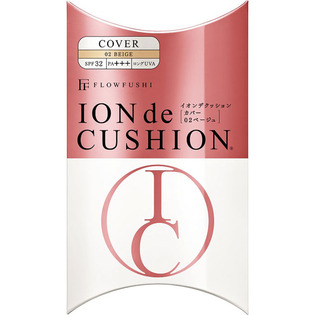

返回列表
产品名称：フローフシ イオン デ クッション Cover 02 ベージュ

アンリンシャス フローフシ イオン デ クッション Cover 02 ベージュ ２０ｇ
メーカー アンリンシャス
JANコード 4571194362435
商品の特徴
SPF32 PA＋＋＋ ロングUVA
- 成分・分量
- ○内容成分
水、シクロペンタシロキサン、トリエチルヘキサノイン、PG、ジフェニルシロキシフェニルトリメチコン、トリメチルシロキシケイ酸、PEG-10ジメチコン、メトキシケイヒ酸エチルヘキシル、ヒドロキシプロピルシクロデキストリン、イソノナン酸イソトリデシル、エタノール、ジメチコン、トリフルオロアルキルジメチルトリメチルシロキシケイ酸、ガーネット末、ビルベリー葉エキス、ポリグルタミン酸、グリチルレチン酸ステアリル、ジエチルアミノヒドロキシベンゾイル安息香酸ヘキシル、t-ブチルメトキシジベンゾイルメタン、ポリヒドロキシステアリン酸エチルヘキシル、PEG-9ポリジメチルシロキシエチルジメチコン、（ジメチコン／（PEG-10／15））クロスポリマー、BG、DPG、ジメチコノール、クエン酸Na、硫酸Mg、トコフェロール、フェノキシエタノール、（＋／－）、酸化チタン、酸化亜鉛、酸化鉄、水酸化Al、マイカ、シリカ、メチコン、ハイドロゲンジメチコン、香料
- 用法及び用量
- こすらずタッピングすることで、より均一に毛穴やシワをカバー